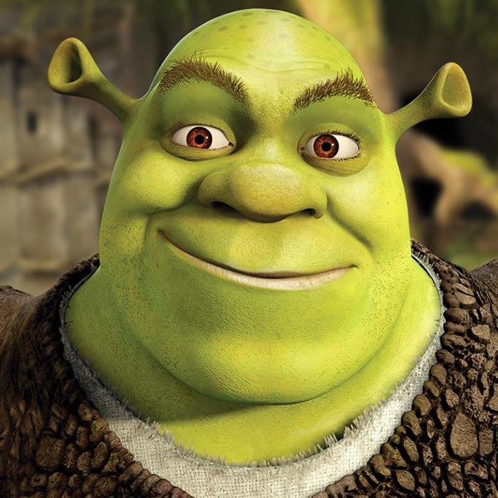

Shrek the Ogre
About Him
Shrek is the main character of the Shrek trilogy. He has green skin with pointy ears and brown eyes. He is an ogre who stays in his swamp but one day leaves it to adventure the world. He becomes friends with Donkey, who serves as a companion for Shrek. Also, Shrek is known for a quote,"What are you doing in my swamp??".
